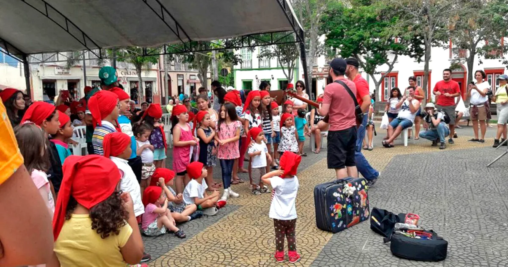

No Brasil, Halloween Ofusca Folclore Brasileiro
Essa inversão cultural faz com que não lembremos do Saci-Pererê, permanecendo parcialmente esquecido
O Halloween, comemorado no dia 31 de outubro, é uma festividade que se popularizou em vários países, especialmente nos países de língua inglesa. No Brasil, também se tornou uma celebração conhecida como Dia das Bruxas, sendo influenciada pela cultura norte-americana e incorporando personagens como vampiros e bruxas.
No entanto, vale ressaltar que o Brasil possui suas próprias lendas e personagens folclóricos que poderiam ser celebrados nessa data, como o Saci-Pererê. O Saci é um personagem do folclore brasileiro, um menino negro de uma perna só que usa uma carapuça vermelha e fuma cachimbo. A data de 31 de outubro foi oficializada como o Dia do Saci em 2004 no Estado de São Paulo e, posteriormente, em 2010, em todo o país.
Para entender por que a celebração Halloween tornou-se tão comum no Brasil, apesar da presença de figuras emblemáticas no folclore brasileiro e que fazem parte do imaginário nacional, é preciso antes saber de onde vem a cultura de celebrar essa data e de que formas ela chega até nós.
Origens das festividades
Quando pensamos no Halloween, geralmente nos vem à mente imagens de fantasias, doces e abóboras esculpidas com rostos assustadores. No entanto, essa visão não é universalmente compartilhada. De acordo com Ana Carolina Chiovatto, doutoranda em Estudos Linguísticos e Literários em Inglês pela Faculdade de Filosofia, Letras e Ciências Humanas (FFLCH) da USP, as origens dessa celebração estão intrinsecamente ligadas à interação e influência de várias culturas, onde festividades e rituais de diferentes povos se sobrepoem e ocorrem no mesmo período.
Ana Carolina Chiovatto - Foto: Repdodução/Academia.edu
Uma das origens do Halloween remonta ao festival celta chamado Samhain, que celebrava o fim do período de colheita e era seguido pelo festival do Dia dos Mortos. Nessa época, acreditava-se que os espíritos dos falecidos podiam retornar ao mundo dos vivos. A cultura celta englobava diversos povos que habitavam regiões da Europa e compartilhavam cultos e tradições em comum. Com a conquista pelos romanos e a posterior cristianização desses povos celtas, muitos dos seus antigos cultos e tradições foram gradualmente modificados. A influência romana e a expansão do Cristianismo trouxeram mudanças significativas às festividades e rituais que compunham o Halloween original.
“Essas festividades são comumente chamadas de pagãs, um termo enviesado, já que pensamos no paganismo em oposição ao cristianismo como ponto de vista dominante”
“Os festivais celtas estavam relacionados à fertilidade, tanto da terra e dos animais quanto das pessoas, o que, para os cristãos, era considerado bárbaro. Por isso, houve uma tentativa de apagamento desses rituais”

Exatamente, o Samhain é um festival gaélico que simboliza o término da temporada de colheita e o início do inverno. Na tradição celta, esse período era considerado liminar, onde a fronteira entre o mundo dos vivos e o "outro mundo" ficava mais tênue, permitindo que os espíritos e seres sobrenaturais, como fadas, tivessem maior acesso ao nosso mundo. Nesse contexto, as pessoas deixavam oferendas de comida e bebida como uma forma de honrar e apaziguar essas entidades espirituais. - Foto: Mihaela Bodlovic via Wikimedia Commons
Com a cristianização desses povos, ocorreu uma adaptação das celebrações celtas. O Dia de Todos os Santos foi instituído no dia 1º de novembro, correspondendo ao antigo festival celta do Dia dos Mortos. Nessa visão cristã, os santos são os mortos a quem devemos prestar culto. Em contrapartida, o Halloween, ou véspera do Dia de Todos os Santos, distanciou-se de sua origem pagã, tornando-se a "All Hallows' Eve" (Véspera de Todos os Santos), marcada pelo costume de fantasias e doces. Os cristãos evitaram a ideia de que as almas pudessem circular no mundo dos vivos, afastando-se gradualmente das tradições celtas originais.
De acordo com Ana, atualmente, o dia 31 de outubro apresenta dois aspectos distintos. Por um lado, as religiões neopagãs buscam resgatar o significado original do festival celta Samhain, celebrando-o como uma data especial. Por outro lado, o cristianismo reinterpretou as tradições celtas, estabelecendo o Dia de Todos os Santos em 1º de novembro, e a véspera, o Halloween, como uma festa infantil com o costume de "gostosuras ou travessuras", como é comum nos Estados Unidos. Gradualmente, essas práticas festivas vão sendo incorporadas em nossa cultura, refletindo a sobreposição de diferentes tradições ao longo do tempo.
A Chegada do Halloween ao Brasil
A população brasileira teve contato com o Halloween, tal como é celebrado nos dias atuais, através de filmes, séries de TV e outros produtos culturais estrangeiros, principalmente dos Estados Unidos. Mas por que os brasileiros decidem celebrar a data da mesma forma como nos EUA?
O conceito de "soft power", cunhado por Joseph Nye, teórico estrategista de relações internacionais, pode ajudar a explicar o quadro do Halloween no Brasil. O "soft power", ou "poder brando", refere-se a estratégias não militares ou econômicas que um Estado utiliza para promover seus interesses na política externa. No contexto do Halloween, o soft power pode ser observado na disseminação cultural e midiática dos costumes da festividade norte-americana por meio de filmes, séries de TV e outros produtos culturais. Essa exposição constante e positiva dessas tradições estrangeiras gerou familiaridade e interesse no público brasileiro, o que levou à adoção e incorporação da celebração de forma similar à dos Estados Unidos.
Alexandre Figueiredo - Foto: Arquivo pessoal
“O soft power diz respeito à capacidade de um país ter influência direta em outros por meio de sua cultura, sua capacidade de se projetar como exemplo para o mundo”, ele explica. No caso dos EUA, um exemplo é a “poderosíssima indústria cultural norte-americana”, como produções de Hollywood e de séries de TV, que chegaram ao Brasil logo após a Segunda Guerra Mundial, “praticamente junto com a televisão”.
Além da influência cultural por meio de filmes e séries, o "soft power" também se manifesta na esfera acadêmica, através do intercâmbio e leitura de pesquisadores, bem como na exportação de um estilo de vida considerado ideal, apresentado como um modelo a ser seguido. Essa influência é notável no Brasil, seja pelo consumo de produtos culturais estrangeiros ou pela adoção de costumes, como a celebração do Halloween. Através do consumo da cultura norte-americana, os brasileiros são expostos ao Halloween e seus costumes, o que gera familiaridade e interesse pela festividade. Além disso, a busca pelo ideal americano de vida, muitas vezes glamourizado na mídia, contribui para a adoção de práticas e celebrações estrangeiras, como o Halloween, mesmo que elas não possuam raízes nas tradições e formação cultural brasileiras.
31 de Outubro: Por Aqui, é Celebrado o Saci-Pererê
Exatamente, a falta de ligações culturais diretas entre o Halloween e a cultura brasileira foi um dos motivos que levou à proposição do projeto de lei para oficializar o Dia do Saci em 31 de outubro no Brasil. O objetivo era valorizar e promover personagens emblemáticos do folclore nacional, como o Saci-Pererê, que fazem parte do imaginário e das tradições brasileiras. Em 2004, a data foi oficializada no Estado de São Paulo e, em 2010, no País.
A visão de Bruno Baronetti sobre o Dia do Saci como uma resposta à indústria cultural americana faz sentido, pois na época em que o projeto de lei foi apresentado, a influência da cultura norte-americana no Brasil, especialmente através de filmes e séries, estava crescendo significativamente. O aumento da popularidade de filmes de grandes franquias com personagens associados ao Halloween, como vampiros e outras figuras do imaginário hollywoodiano, pode ter contribuído para despertar uma preocupação com a preservação da cultura e identidade brasileiras.
Bruno Baronetti - Foto: Reprodução/Facebook
“Além disso, havia uma percepção de que cada vez mais escolas do ensino básico valorizavam o Dia das Bruxas no modelo norte-americano”, aponta. Tendo o Brasil um folclore muito rico, com lendas e histórias vindas da miscigenação entre diversos povos, o que é próprio da nossa formação como País, foi colocado em questão: “Por que não promover uma reflexão sobre o papel da cultura nacional?”.
A análise do historiador ressalta a riqueza e complexidade cultural presente na lenda do Saci-Pererê, revelando como essa figura folclórica incorpora elementos de diversas origens que constituíram a formação do Brasil. O personagem do Saci é uma síntese das tradições do Sul e do Sudeste do país, mas vai além disso, conectando-se a diferentes influências históricas. A figura do jovem negro, com o cachimbo, representa uma influência indígena, mostrando a conexão com as culturas nativas que habitavam a região antes da colonização. Além disso, os elementos da cultura árabe presentes na lenda, como o fato de ser preso em uma garrafa e conceder desejos, remetem ao rico acervo de histórias e contos presentes no ciclo de As Mil e Uma Noites, que faz parte do legado cultural da Península Ibérica, que foi dominada pelos árabes durante séculos.
Algumas cidades do Brasil, sobretudo nos municípios de São Paulo, começaram a fazer festas para essas lendas do folclore nacional no dia 31 de outubro. “Em São Luís do Paraitinga, no Vale do Paraíba, temos a Sociedade dos Observadores de Saci, que todo ano promove a Festa do Saci”, conta Baronetti.
Festa do Saci em São Luiz do Paraitinga - Foto: Divulgação/Bem Bolado
O pesquisador explica que os estudos folclóricos no Brasil, desde o início do século 20, por meio do Movimento Folclórico Brasileiro, e grandes estudiosos, como Mário de Andrade e Edison Carneiro, buscam a inserção desses temas nas escolas. “O Dia do Saci tem o papel de estímulo, de resgate da nossa cultura, e é justamente um contraponto a esse projeto colonizador e imperialista que busca inserir aqui esses elementos alheios à nossa cultura.”
“A ideia não é acabar com o Halloween, mas criar um contraponto para que as crianças, além da tradição estrangeira, já conhecida, passem a ter contato também com tradições e culturas nacionais”, conclui o historiador, resgatando um pensamento de Plínio Marcos, dramaturgo brasileiro, dizendo que “um povo que não ama e preserva as suas formas de expressão mais autênticas jamais será um povo livre”.
Rádio USP
Ouça a entrevista de Bruno Baronetti, pesquisador e doutorando em História Social pela Faculdade de Filosofia, Letras e Ciências Humanas (FFLCH) da USP, ao repórter Bruno Militão sobre a lenda do Saci-Pererê.